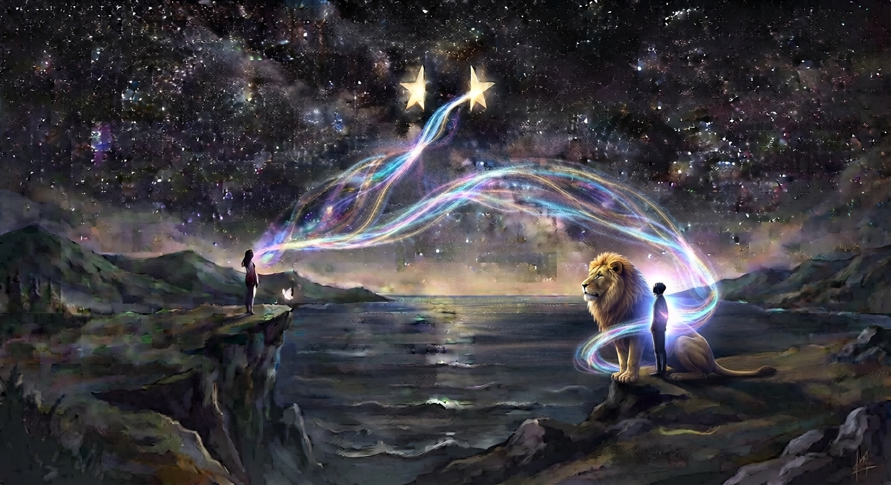

Two Halves of One Eternal Star
Two Halves of One Eternal Star is a deeply emotional poem about two rare souls bound by a connection that transcends distance, time, and ordinary understanding.
It explores the mystery of mirrored souls, the tension between the masculine and feminine, and the inner conflict that
arises when one soul reflects truths the other is not yet ready to face. Beneath the pain of separation lies a deeper
spiritual journey, one shaped by awakening, surrender, and the search for light.
The poem speaks of a love that does not disappear with distance. When one soul hurts, the other feels it. When one finds
happiness, the other smiles. Their unseen connection becomes a sacred current flowing between them, even across the
miles.
Ultimately, this is a poem about surrendering to a bond that feels written beyond this lifetime, and about two halves of
one eternal star, separated by the vastness of distance, yet forever carrying the same light within.
🎵 "Ethereal Magic" - Rockot (Pixabay Music)
